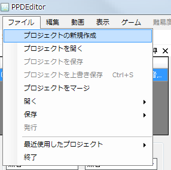
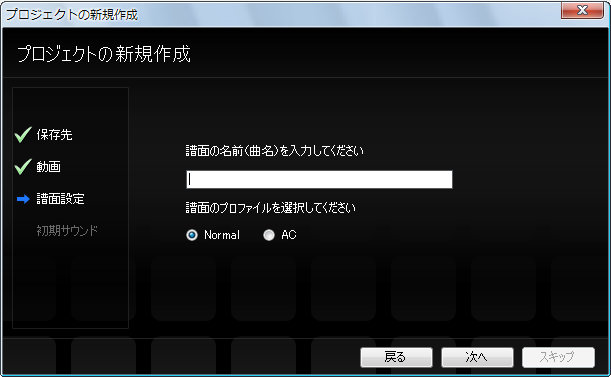
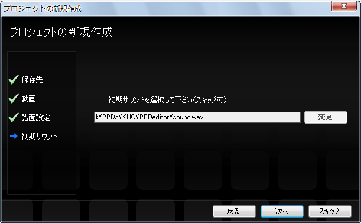

먼저 패턴을 만들 동영상을 준비합니다.(임시로 movie.mp4 파일로 만들어 보겠습니다)
PPDEditor를 실행하고 파일→열기→프로젝트 새로 만들기를 고릅니다.

그러면 프로젝트 새로 만들기 마법사가 표시되고 내용에 따라서 설정합니다.
가장 먼저 프로젝트를 저장할 위치를 선택합니다. 일반적으로 그냥 쓰면 되기 때문에 다음을 누릅니다.

그 다음에 패턴을 만들 동영상을 선택합니다.
바꾸기를 눌러 창을 열고 movie.mp4가 저장되어 있는 폴더에서 movie.mp4를 선택하고 열기를 누릅니다.


다음에 패턴의 이름과 프로필을 설정합니다.
패턴의 이름에는 곡명(또는 더 알기 쉬운 것이 있으면 그것도 더합니다)을 입력합니다.
프로필에서 패턴을 AC 방식으로 하고 싶으면 AC를 선택해 주세요(AC가 무엇인지 모르는 분은 Normal도 상관없습니다)
(※프로젝트 작성 후에 바꿀 수 있습니다)

다음으로 처음 소리를 설정합니다.
일반적으로 기본 탬버린의 소리도 상관없습니다
(※프로젝트 작성 후에 바꿀 수 있습니다)

마침을 누릅니다.

동영상을 재생·일시정지 해 봅시다.
타임 라인(혹은 게임 창)을 활성화 합니다(활성화되면 제목 표시줄이 회색이 됩니다)

타임 라인(혹은 게임 창)이 활성화 된 상태에서 스페이스 키를 누르면
재생·일시정지할 수 있습니다.
또 재생, 일시정지, 정지는 도구모음에서도 할 수 있습니다.

다음으로 패턴의 기본적인 설정을 하겠습니다.
다음으로